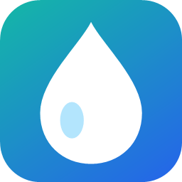
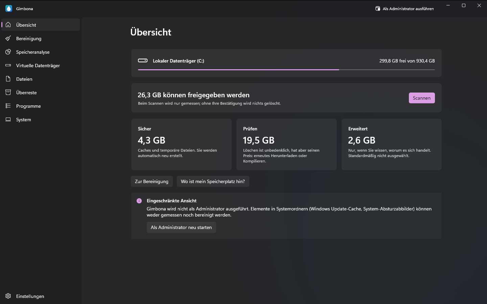
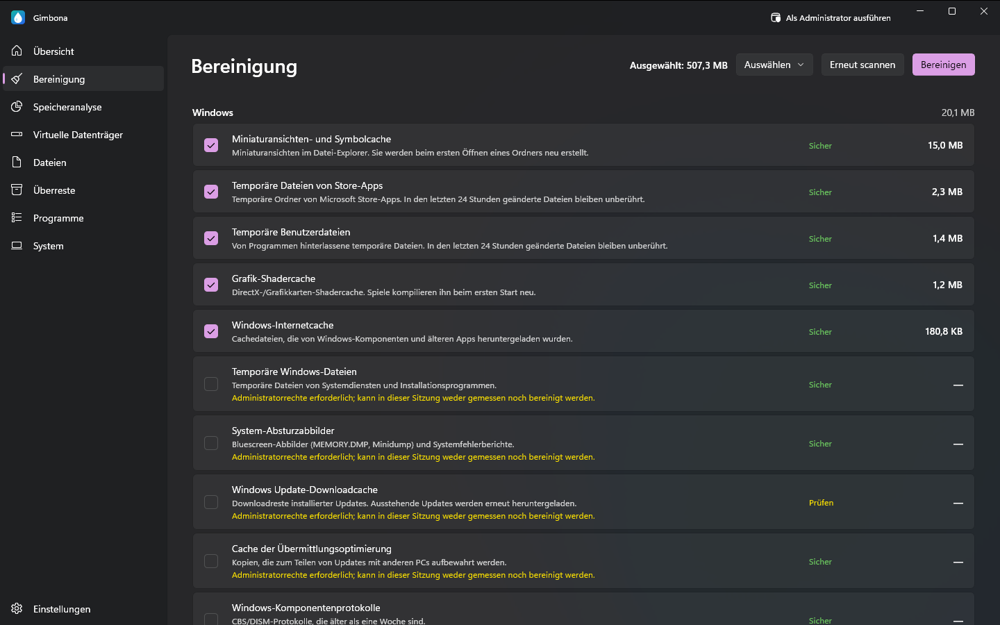
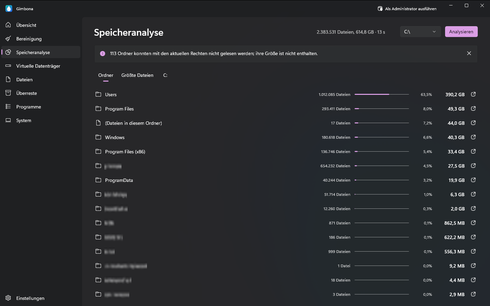
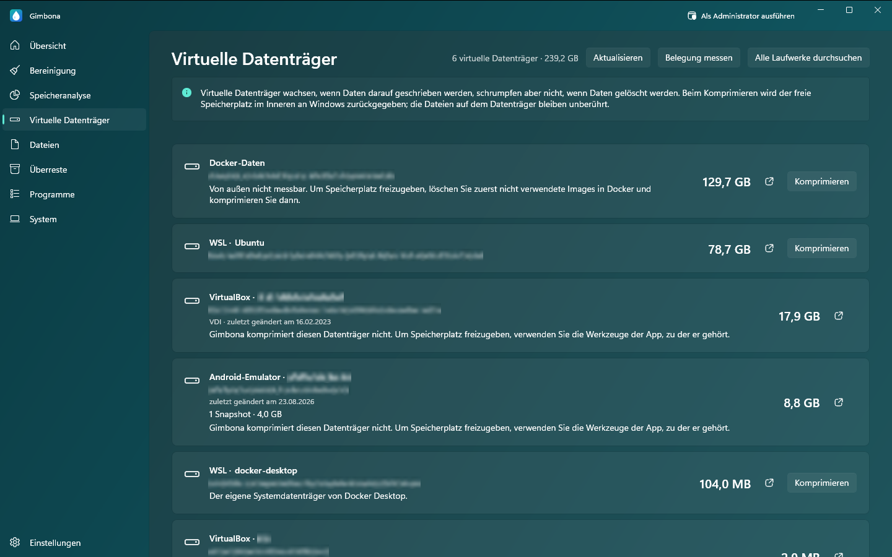

GimbonaDatenträgerbereinigung für Windows: sicher Speicherplatz freigeben
Festplatte voll? Gimbona zeigt, was Ihr Laufwerk füllt, und hilft beim Bereinigen: Datenmüll, temporäre Dateien, Caches, Reste von Windows Update, große und doppelte Dateien, ungenutzte Programme und virtuelle Datenträger, die immer nur wachsen. Der Scan misst nur; ohne Ihre Bestätigung wird nichts gelöscht.
Gimbona im Microsoft Store herunterladenKostenlos für Windows 10 und Windows 11. Gimbona Pro ist ein optionaler Einmalkauf, kein Abo.




Funktionen
- Datenträgerbereinigung mit Sicherheitsstufe für jedes Element: Sicher, Prüfen, Erweitert
- Beim Scannen wird nur gemessen; ohne Ihre Bestätigung wird nichts gelöscht
- Datenmüll, temporäre Dateien und Caches von Windows, Browsern und Apps bereinigen
- Speicherplatz analysieren nach Ordnern, mit den größten Dateien
- Große und alte Dateien finden
- Doppelte Dateien finden
- Überreste deinstallierter Programme
- Installierte Programme nach Größe und letzter Ausführung
- Ungenutzte Programme gesammelt deinstallieren (Pro)
- Virtuelle WSL-, Docker- und Hyper-V-Datenträger komprimieren (Pro)
- Bereinigung von Entwickler- und Spiele-Caches (Pro)
- Automatische Bereinigung, wöchentlich oder monatlich (Pro)
- Bereinigung von Windows-Komponentenspeicher (WinSxS) und Ruhezustandsdatei (Pro)
- Keine Datenerfassung; alles bleibt auf Ihrem PC
- Englisch, Deutsch, Spanisch, Französisch und Türkisch
- Dunkles, helles und türkisfarbenes Design
Was Gimbona bereinigt
Temporäre Dateien, Datenmüll und Caches löschen
Gimbona findet temporäre Windows-Dateien, Absturzabbilder, Miniaturansichten- und Shader-Caches und Reste von Windows Update sowie die Caches von Browsern (Chrome, Edge, Firefox, Brave, Opera) und Apps wie VS Code, Discord, Slack und Spotify. Jeder Eintrag zeigt seinen Platzbedarf und eine Sicherheitsstufe: Sicher, Prüfen oder Erweitert.
Speicherplatz analysieren, große und doppelte Dateien finden
Sehen Sie, welche Ordner und Dateien Ihr Laufwerk belegen, die größten zuerst. Durchsuchen Sie Ihre persönlichen Ordner nach großen und alten Dateien und nach doppelten Dateien, und finden Sie Ordner, die deinstallierte Programme zurückgelassen haben. Die Suche listet nur auf; was Sie auswählen, wird in den Papierkorb verschoben und lässt sich dort wiederherstellen.
WSL-, Docker- und Hyper-V-Datenträger verkleinern (VHDX)
Virtuelle Datenträger wachsen, wenn Daten geschrieben werden, schrumpfen aber nicht, wenn Daten gelöscht werden. Gimbona listet die Datenträger von WSL, Docker Desktop, Hyper-V, VirtualBox, VMware und Android-Emulatoren mit ihrer Größe auf; Gimbona Pro komprimiert ext4.vhdx und andere dynamische VHDX- und VHD-Dateien und gibt den freien Platz darin an Windows zurück. Die Dateien im Datenträger werden nicht angetastet.
Ungenutzte Programme deinstallieren
Sehen Sie Ihre installierten Programme nach Größe und entfernen Sie sie. Läuft Gimbona als Administrator, zeigt es auch, welche Programme seit 3, 6 oder 12 Monaten nicht gestartet wurden. Einzelne Programme zu entfernen ist kostenlos; Gimbona Pro entfernt mehrere in einem Durchgang. Treiber, Laufzeitumgebungen und Sicherheitssoftware werden nicht aufgeführt und können daher nicht versehentlich entfernt werden.
Sicherheit zuerst
Nach dem Scan sind nur sichere Einträge ausgewählt; erweiterte Einträge sind nie vorausgewählt. Gimbona prüft zuerst den Zustand Ihres Datenträgers: Meldet Windows, dass das Laufwerk repariert werden muss, wird nicht bereinigt. Gimbona sammelt keine Daten und sendet nichts.
Fragen und Antworten
Laufwerk C ist voll. Was kann ich gefahrlos löschen?
Beginnen Sie mit den Einträgen, die Gimbona als Sicher kennzeichnet: temporäre Dateien, Caches, Absturzabbilder und Reste von Windows Update. Windows und Ihre Apps legen sie bei Bedarf neu an. Der Scan zeigt, wie viel Platz jeder Eintrag freigibt, bevor irgendetwas gelöscht wird.
Ist es sicher, temporäre Dateien und Caches zu löschen?
Bei den als Sicher gekennzeichneten Einträgen ja; Apps legen sie neu an, höchstens der erste Start dauert etwas länger. Auch Einträge der Stufe Prüfen lassen sich gefahrlos löschen, aber etwas muss erneut heruntergeladen oder erstellt werden. Einträge der Stufe Erweitert sind für Nutzer gedacht, die wissen, worum es sich handelt.
Warum ist mein WSL- oder Docker-Datenträger (ext4.vhdx) noch riesig, obwohl ich Dateien gelöscht habe?
Eine VHDX-Datei wächst, wenn Daten geschrieben werden, schrumpft aber nicht, wenn Daten gelöscht werden. Das Komprimieren gibt diesen freien Platz an Windows zurück. Gimbona zeigt, wie viel ein WSL-Datenträger zurückgeben kann, und Gimbona Pro komprimiert ihn; WSL wird dafür heruntergefahren, und Gimbona sagt es Ihnen, bevor es beginnt.
Löscht Gimbona etwas von selbst?
Nein. Der Scan misst nur, und bereinigt wird erst, wenn Sie bestätigen. Die automatische Bereinigung ist eine optionale Pro-Einstellung, standardmäßig ausgeschaltet, und bereinigt nur sichere Einträge.
Ist Gimbona kostenlos?
Ja. Die Speicherplatzanalyse und die Bereinigung von Windows-, Browser- und App-Dateien sind kostenlos. Gimbona Pro ergänzt das Komprimieren virtueller Datenträger, Entwickler- und Spiele-Caches, das Entfernen mehrerer Programme und die automatische Bereinigung – als Einmalkauf, ohne Abo.
Sendet Gimbona meine Daten irgendwohin?
Nein. Scan und Bereinigung finden nur auf Ihrem PC statt. Gimbona enthält weder Nutzungsanalyse noch Telemetrie oder Werbung.